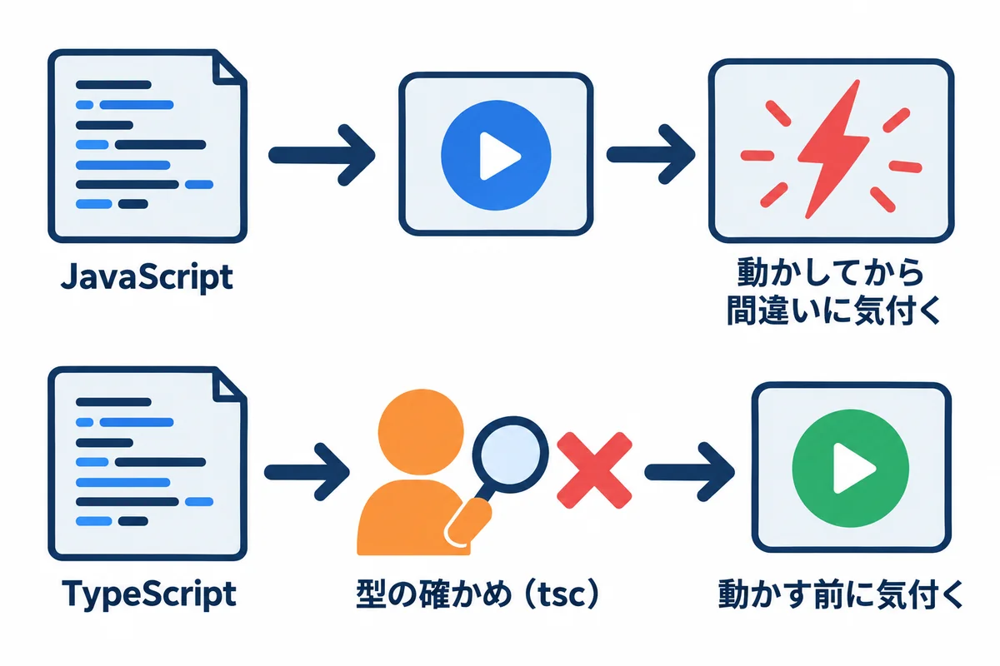
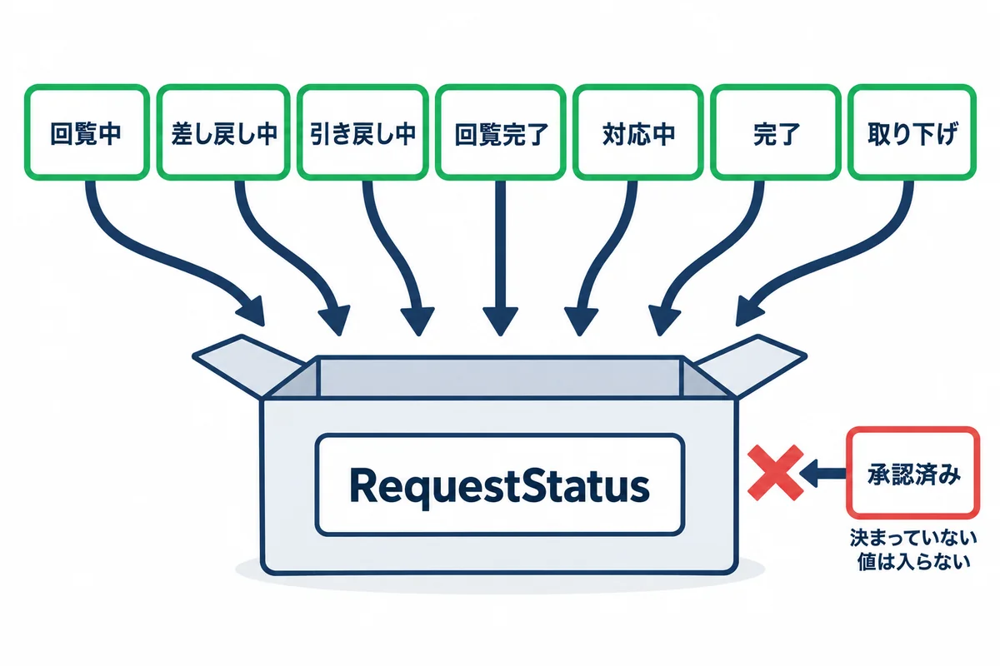
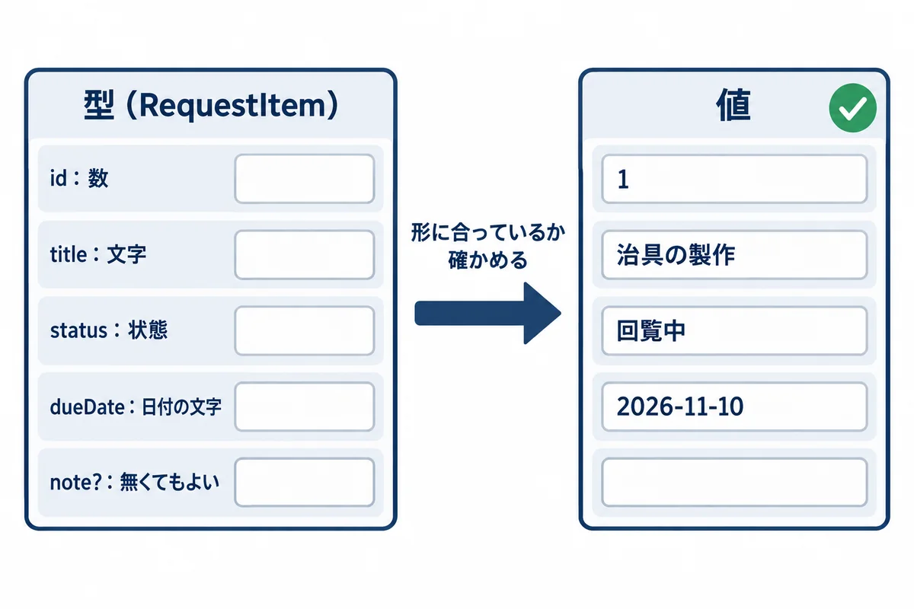
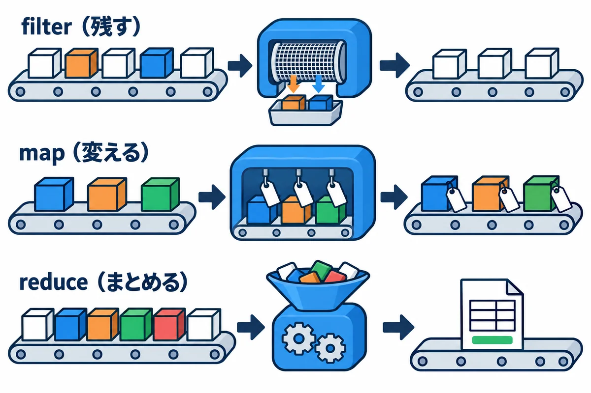
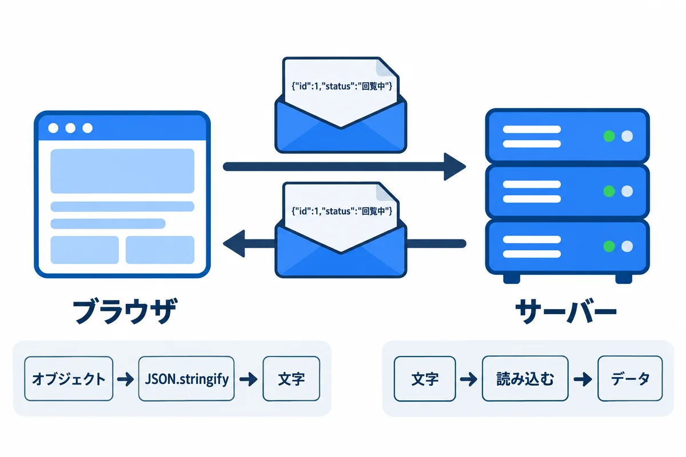
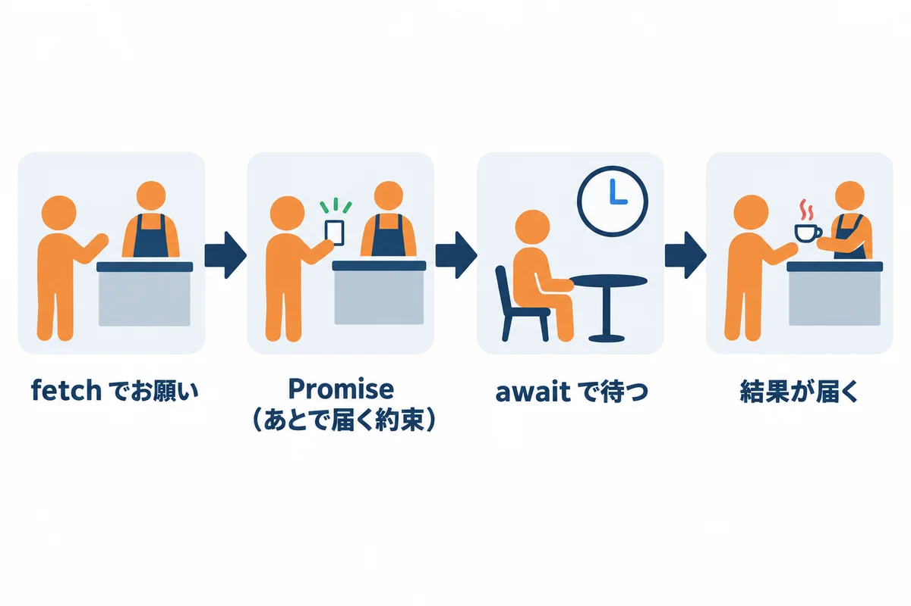

色の付いた枠のコードの、右上の「コピー」ボタンを押してください。コピーしたら、PDF を見ていた画面に戻ります（ブラウザーで PDF を見ていた時は「戻る」、VS Code で見ていた時は VS Code の窓に切り替えます）。
filter・map・reduce）で、一覧を絞る・変える・数えるfetch・async・await）練習のファイルは samples/02_typescript/ にあります。この巻の結果は、Node.js（25 系）と TypeScript 7.0.2 で、実際に動かした結果です。
もっと詳しく:
kosu/04_JavaScript_TypeScript.md、next/02-typescript-basics.mdにも、TypeScript の説明があります。

tsc という道具が確かめます。用語: 型（かた。type：その値が「文字」か「数」か「決まった形のまとまり」か、という種類。型が合わない使い方を、動かす前に見つけられる）
用語: tsc（ティーエスシー：TypeScript の型を確かめる道具。TypeScript Compiler）
▶ 準備: 00 の 6.1（資料のフォルダ）・6.2（VS Code）・6.3（Node.js）。下のコマンドは、PowerShell で資料のフォルダにいるところから打ちます（00 の 6.1）。npm が「スクリプトの実行が無効」で止められたら、npm.cmd・npx.cmd と打ちます（00 の 6.3）。
▶ 書く所と動かし方: 練習のファイルは src\ の中にあります。code . で VS Code を開いて読み、書きかえたら Ctrl ＋ S で保存して、PowerShell で node src\basics.ts のように動かします。自分で新しいファイルを作るときも、src\ の中に .ts で作ります（npx tsc が確かめるのは src\ の .ts です）。
cd webapp_learning\samples\02_typescript
npm install # TypeScript などの部品を入れる（最初の 1 回）
npx tsc # 型を確かめる（何も出なければ、間違い無し）
node src\basics.ts # 動かす
▶ ここで初めて出てくるコード
npm install（Node.js）:package.jsonに書いてある部品（TypeScript など）を、まとめて入れるコマンド。入った部品はnode_modulesフォルダに入ります（Git には入れません）。最初の 1 回だけ打ちます。npm install 部品の名前なら、その部品を足します。npx tsc（Node.js）: TypeScript の型の確かめ（tsc）を動かすコマンド。何も出なければ、型のまちがいはありません。まちがいがあると、ファイル名・行・何がおかしいかを表示します。npxは、入れた部品のコマンドを動かす道具です。
.ts のファイルの型の書き込みを取り除いて、そのまま動かせます。npx tsc です（6 章で、その違いを見ます）。package.json（使う部品と版）と tsconfig.json（型の確かめ方の設定）:
{
"name": "webapp-learning-typescript",
"private": true,
"type": "module",
"scripts": {
"check": "tsc"
},
"devDependencies": {
"@types/node": "24.19.2",
"typescript": "7.0.2"
}
}
▶ ここで初めて出てくるコード
"name":（設定ファイル（JSON））:package.jsonの"name"は、このプロジェクト（パッケージ）の名前です。"private":（設定ファイル（JSON））:"private": trueは、「このパッケージは npm に公開しない」という印です。間違って公開するのを防ぎます。"type":（設定ファイル（JSON））:"type": "module"は、「.jsのファイルを、新しい書き方（ES モジュール。import・export）として読む」という設定です。"scripts":（設定ファイル（JSON））:"scripts"には、npm run 名前で動かすコマンドを書きます。"check": "tsc"なら、npm run checkでtsc（型の確かめ）が動きます。"check":（設定ファイル（JSON））:"scripts"の中の"check": "tsc"は、npm run checkという名前で、tsc（TypeScript の型の確かめ）を動かす登録です。名前は自分で決めます。"devDependencies":（設定ファイル（JSON））:"devDependencies"には、開発の時だけ使う部品と、その版を書きます。npm installで入ります。"@types/node":（設定ファイル（JSON））:"@types/node"は、Node.js の機能（node:httpなど）の型の説明の部品です。これが無いと、TypeScript が Node.js の関数の型を知りません。"typescript":（設定ファイル（JSON））:"typescript": "7.0.2"は、TypeScript（型を確かめる道具tsc）の部品と、その版です。
{
"compilerOptions": {
"strict": true,
"target": "es2023",
"module": "nodenext",
"noEmit": true,
"allowImportingTsExtensions": true,
"erasableSyntaxOnly": true,
"types": ["node"]
},
"include": ["src/*.ts"]
}
▶ ここで初めて出てくるコード
"compilerOptions":（設定ファイル（JSON））:tsconfig.jsonの"compilerOptions"には、TypeScript の確かめ方の設定を書きます。"strict":（設定ファイル（JSON））:"strict": trueは、TypeScript の確かめを、いちばんきびしくする設定です。nullの取り違えなど、間違いを多く見つけてくれます。"target":（設定ファイル（JSON））:"target": "es2023"は、どの版の JavaScript の書き方を前提にするかです。"module":（設定ファイル（JSON））:"module": "nodenext"は、importの読み方を、今の Node.js と同じにする設定です。"noEmit":（設定ファイル（JSON））:"noEmit": trueは、tscに、型の確かめだけをさせ、JavaScript のファイルは書き出させない設定です（動かす時は Node.js が直接.tsを読みます）。"allowImportingTsExtensions":（設定ファイル（JSON））:"allowImportingTsExtensions": trueは、import … from "./types.ts"のように、.tsを付けて読み込むことを許す設定です。"erasableSyntaxOnly":（設定ファイル（JSON））:"erasableSyntaxOnly": trueは、「型を消すだけで JavaScript になる書き方」だけを許す設定です。Node.js が.tsをそのまま動かせる書き方に、そろえられます。"types":（設定ファイル（JSON））:"types": ["node"]は、使う型の説明の部品（ここでは@types/node）を選ぶ設定です。"include":（設定ファイル（JSON））:"include": ["src/*.ts"]は、確かめるファイルの範囲です。
| 設定 | 意味 |
|---|---|
"strict": true |
型の確かめを、いちばん厳しくする。初めから厳しくしておく方が、間違いが少ない |
"noEmit": true |
型を確かめるだけで、JavaScript のファイルは作らない（Node.js が直接動かすため） |
"include": ["src/*.ts"] |
確かめるファイル |
src/basics.ts:
// 1. 変数と型
const appName: string = "依頼・承認アプリ"; // 文字
let count: number = 3; // 数
const isOpen: boolean = true; // はい・いいえ
count = count + 1; // let は、あとから変えられる
// 2. 配列（同じ型の物の並び）
const approvers: string[] = ["山田", "佐藤", "鈴木"];
// 3. オブジェクト（名前の付いた値のまとまり）
const user = { employeeNo: "012345", name: "山田 太郎", isAdmin: false };
// 4. 関数（引数と戻り値に型を付ける）
function greet(name: string): string {
return `${name} さん、こんにちは`; // ` で囲むと、${ } の中に値を埋め込める
}
// 5. アロー関数（短い書き方の関数）
const double = (n: number): number => n * 2;
console.log(appName, count, isOpen);
console.log(approvers.length, "人:", approvers.join("、"));
console.log(user.name, user.isAdmin ? "管理者" : "一般");
console.log(greet(user.name));
console.log(double(21));
▶ ここで初めて出てくるコード
const（JavaScript・TypeScript）: JavaScript・TypeScript で、変えない値に名前を付ける書き方。const db = …;。あとで別の値を入れようとするとエラーになります。let（JavaScript・TypeScript）: JavaScript・TypeScript で、あとで変える値に名前を付ける書き方。function（TypeScript）: 関数（ひとまとまりの処理）を作る書き方。function greet(name: string): string { … }は、「文字列のnameを受け取って、文字列を返す関数greet」です。return（JavaScript・TypeScript）: JavaScript・TypeScript で、関数の結果を返して、関数を終える命令。.log()（JavaScript・TypeScript）:console.log(…)は、渡した値を画面（ターミナルやブラウザーの開発者ツール）に表示します。.join()（JavaScript・TypeScript）: JavaScript・TypeScript で、配列の中身を区切り文字でつないで 1 つの文字列にするメソッド。["a", "b"].join(";")は"a;b"。=>（JavaScript・TypeScript）: アロー関数（短く書ける関数）の矢印。(path) => `…${path}`は「pathを受け取って文字列を返す関数」。//（JavaScript・TypeScript）: JavaScript・TypeScript では、//から行の終わりまでがコメントです。`${…}`（JavaScript・TypeScript）:`…`（バッククォートで囲んだ文字。テンプレート文字列）の中の${ }には、値や式を入れられます。`エラー ${res.status}`は、res.statusが 404 ならエラー 404になります。改行も、そのまま書けます。条件 ? A : B（JavaScript・TypeScript）:条件 ? A : Bは、「条件が合えば A、合わなければ B」になる式です（三項演算子）。user.isAdmin ? "管理者" : "一般"。ifとちがい、値を返すので、そのまま変数や表示に使えます。型[]（TypeScript）:string[]のように型の後ろに[]を付けると、「その型の並び（配列）」という型になります。Array<string>と書いても同じです。boolean（TypeScript）:booleanは、true（はい）かfalse（いいえ）の型です。.length（JavaScript・TypeScript）:.lengthは、並びの数や、文字の数です。文字の場合は、UTF-16 という数え方なので、絵文字などは 2 と数えることがあります（[...文字].lengthなら、見た目の文字の数に近くなります）。
動かした結果（node src\basics.ts）:
依頼・承認アプリ 4 true
3 人: 山田、佐藤、鈴木
山田 太郎 一般
山田 太郎 さん、こんにちは
42
| 書き方 | 意味 |
|---|---|
const 名前: 型 = 値 |
変えない値（定数）。ふだんはこちらを使う |
let 名前: 型 = 値 |
あとから変える値 |
string・number・boolean |
文字・数・はい／いいえ |
string[] |
文字の配列 |
{ employeeNo: "012345", ... } |
オブジェクト。型を書かなくても、TypeScript が中身から型を決めてくれる（型推論） |
function greet(name: string): string |
引数 name は文字、戻り値も文字 |
`${name} さん` |
文字の中に値を埋め込む（テンプレート文字列。` はバッククォート） |
条件 ? A : B |
条件が正しければ A、違えば B |
用語: 型推論（かたすいろん：型を書かなくても、入れた値から TypeScript が型を決めてくれること）

依頼の状態は、7 つのどれかです（00 学習ガイド 1.2）。ただの string にすると、"承認済み" のような、決まっていない文字も入ってしまいます。決まった値を |（または）でつないだ型にすると、ほかの値を入れたときに、tsc が止めてくれます。
src/status.ts:
// 依頼の状態と、状態を変える操作を「型」で決める
/** 依頼の状態。この 7 つ以外の文字は入れられない */
export type RequestStatus =
| "回覧中"
| "差し戻し中"
| "引き戻し中"
| "回覧完了"
| "対応中"
| "完了"
| "取り下げ";
/** 状態を変える操作 */
export type Action =
| "全員が承認"
| "差し戻し"
| "引き戻し"
| "再依頼"
| "取り下げ"
| "担当を決める"
| "引き渡し";
/** 今の状態と操作から、次の状態を返す。できない操作なら null を返す */
export function nextStatus(current: RequestStatus, action: Action): RequestStatus | null {
switch (current) {
case "回覧中":
if (action === "全員が承認") return "回覧完了";
if (action === "差し戻し") return "差し戻し中";
if (action === "引き戻し") return "引き戻し中";
return null;
case "差し戻し中":
case "引き戻し中":
if (action === "再依頼") return "回覧中";
if (action === "取り下げ") return "取り下げ";
return null;
case "回覧完了":
return action === "担当を決める" ? "対応中" : null;
case "対応中":
return action === "引き渡し" ? "完了" : null;
case "完了":
case "取り下げ":
return null;
default: {
// ここに来るのは、状態を足したのに case を書き忘れたとき。型の確かめでエラーになる
const unreachable: never = current;
return unreachable;
}
}
}
/** 一覧で使う札の色 */
export function badgeColor(status: RequestStatus): "白" | "オレンジ" | "青" | "グレー" {
switch (status) {
case "回覧中":
return "白";
case "差し戻し中":
case "引き戻し中":
return "オレンジ";
case "回覧完了":
case "対応中":
return "青";
case "完了":
case "取り下げ":
return "グレー";
}
}
▶ ここで初めて出てくるコード
export（TypeScript）: 「このファイルの外から使ってよい」という印。export type RequestStatus = …と書くと、ほかのファイルでimportして使えます。type（TypeScript）: 型に名前を付ける書き方。type RequestStatus = "回覧中" | "回覧完了";のように、決まった値だけを許す型や、オブジェクトの形を決められます。null（TypeScript）: 「値が無い」ことを、わざと表す値。「できない操作ならnullを返す」のように使います。switch（TypeScript）: 値によって処理を分ける書き方。switch (current) { case "回覧中": … }。合うcaseから下を動かすので、それぞれの終わりにreturnやbreakを書きます。case（TypeScript）:switchの中の「この値の時は」の部分。if（JavaScript・TypeScript）: JavaScript・TypeScript の条件。if (条件) { … } else { … }。条件は( )で囲みます。default（JavaScript・TypeScript）:export defaultは、そのファイルから「いちばんの物」を 1 つ外に出す書き方。読み込む側はimport 名前 from "./ファイル"と、好きな名前で受け取れます。never（TypeScript）: 「ここには絶対に来ない」ことを表す型。switchの最後にconst unreachable: never = current;と書いておくと、状態を足したのにcaseを書き忘れた時、npx tscがエラーで教えてくれます。===（TypeScript）: 「型も値も同じか」を比べる書き方。==は型を勝手にそろえてから比べて思わぬ結果になるので、ふつうは===を使います（違うかは!==）。/* */（JavaScript・TypeScript）: JavaScript・TypeScript では、/*から*/までがコメントです。何行にもまたがって書けます。A | B（TypeScript）:type RequestStatus = "下書き" | "回覧中" | "承認済み";の|は、「このどれか」を表す型です（ユニオン型）。決めた値以外を入れると、TypeScript がエラーで教えてくれます。string | nullは「文字か、null」です。import type（TypeScript）:import type { RequestStatus } from "./types.ts";は、「型だけ」を読み込む書き方です。型は動く時には消えるので、動くプログラムには何も残りません。import { useState, type FormEvent }のように、1 つずつtypeを付けることもできます。
| 書き方 | 意味 |
|---|---|
type RequestStatus = "回覧中" \| "差し戻し中" \| ... |
型に名前を付ける。\| でつないだ値のどれか（ユニオン型） |
export |
ほかのファイルから使えるようにする |
RequestStatus \| null |
状態か、「無し」（null） |
switch (current) { case "回覧中": ... } |
値ごとに分ける |
case "差し戻し中": case "引き戻し中": |
2 つの値で、同じことをする |
const unreachable: never = current; |
全部の状態を case に書いたかの確かめ。書き忘れると、tsc がここでエラーにする（6 章） |
/** ... */ |
説明のコメント。エディターで、関数の名前にマウスを乗せると表示される |
この nextStatus は、00 学習ガイドの状態遷移図を、そのままプログラムにした物です。サーバー（06 の Django・08 の Topcoat）でも、同じ考え方で作ります。
用語: ユニオン型（union：「A か B か C」のように、いくつかの型や値のどれか、という型）

export type RequestItem = {
id: number;
title: string;
status: RequestStatus;
dueDate: string;
approvers: string[];
note?: string; // ? が付いた項目は、無くてもよい
};
▶ ここで初めて出てくるコード
名前?:（TypeScript）:note?: string;のように名前の後ろに?を付けると、「この項目は、無くてもよい」という意味になります。無い時の値はundefinedです。
status に RequestStatus を使うと、依頼のデータにも、決まった状態しか入らなくなります。note?: のように ? を付けた項目は、無くてもかまいません。その代わり、使う前に「あるか」を確かめる必要があります（4 章の最後）。
src/requests.ts:
import { badgeColor, nextStatus, type RequestStatus } from "./status.ts";
/** 依頼 1 件の形 */
export type RequestItem = {
id: number;
title: string;
status: RequestStatus;
dueDate: string; // "2026-11-10" の形の日付
approvers: string[]; // 回覧者（1〜3 人）
note?: string; // ? が付いた項目は、無くてもよい
};
const requests: RequestItem[] = [
{ id: 1, title: "治具の製作", status: "回覧中", dueDate: "2026-11-10", approvers: ["山田", "佐藤"] },
{ id: 2, title: "部品の追加工", status: "回覧完了", dueDate: "2026-10-31", approvers: ["山田"] },
{ id: 3, title: "棚の取り付け", status: "差し戻し中", dueDate: "2026-11-20", approvers: ["佐藤"], note: "寸法を追記" },
{ id: 4, title: "型の改造", status: "回覧中", dueDate: "2026-11-03", approvers: ["鈴木", "山田", "佐藤"] },
];
// filter: 条件に合う物だけ残す
const circulating = requests.filter((r) => r.status === "回覧中");
console.log("回覧中:", circulating.map((r) => r.title));
// map: 1 つずつ、別の形に変える
const rows = requests.map((r) => `${r.id} ${r.title}（${r.status}・${badgeColor(r.status)}）`);
console.log(rows.join("\n"));
// reduce: 全部をまとめて 1 つの値にする（状態ごとの件数）
const counts = requests.reduce<Record<string, number>>((acc, r) => {
acc[r.status] = (acc[r.status] ?? 0) + 1;
return acc;
}, {});
console.log("状態ごとの件数:", counts);
// 期限の近い順に並べる（元の配列は変えない）
const byDue = [...requests].sort((a, b) => a.dueDate.localeCompare(b.dueDate));
console.log("期限の近い順:", byDue.map((r) => r.dueDate));
// 状態を変える
console.log(nextStatus("回覧中", "差し戻し")); // 差し戻し中
console.log(nextStatus("完了", "差し戻し")); // null（完了した依頼は差し戻せない）
// ? の付いた項目は、無いかもしれないので、確かめてから使う
for (const r of requests) {
if (r.note !== undefined) console.log(`${r.title} のメモ: ${r.note}`);
}
▶ ここで初めて出てくるコード
import（JavaScript・TypeScript）: ほかのファイルや部品から、関数などを読み込む書き方。import { rmSync } from "node:fs";は、Node.js のファイルの道具からrmSyncを使えるようにします。from（JavaScript・TypeScript）:import { 名前 } from "場所";の一部で、「どこから読み込むか」を書きます。for（JavaScript・TypeScript）: くり返しの書き方。for (const x of 配列) { … }は、配列の中身を 1 つずつxに入れてくり返します。of（TypeScript）:for (const 名前 of 配列)の一部で、「配列の中身を 1 つずつ」という意味です（inを使うと、中身ではなく番号が出てくるので注意）。undefined（TypeScript）: 「まだ値が入っていない」ことを表す値。?の付いた無くてもよい項目が無い時や、配列の範囲の外を読んだ時に出てきます。.filter()（JavaScript・TypeScript）: 配列から、条件に合う物だけを集めた新しい配列を作るメソッド。.map()（JavaScript・TypeScript）: 配列の中身を 1 つずつ変換した、新しい配列を作るメソッド。.sort()（TypeScript）: 配列を並べかえるメソッド。(a, b) => …の比べる関数を渡し、マイナスならaが先、プラスならbが先になります。元の配列を書きかえるので、[...requests].sort(…)のように写してから並べかえることがよくあります（新しい配列を作るtoSortedもあります）。.localeCompare()（TypeScript）: 2 つの文字列を、辞書の順で比べるメソッド。a.localeCompare(b)は、aが先ならマイナス、同じなら 0、後ならプラス。sortの中で、文字（日付の文字など）で並べる時に使います。??（TypeScript）:a ?? bは、aがnullかundefinedならbを使う書き方。(acc[key] ?? 0) + 1は「まだ無ければ 0 から数える」。...（TypeScript）: スプレッド構文。[...requests]は配列の中身を広げて、新しい配列（写し）を作ります。{ ...user, isAdmin: true }は、オブジェクトを写して一部だけ変えます。\n（文字列の中の特別な書き方）: 文字列の中の\nは「改行」を表す書き方です。\（バックスラッシュ。日本語のキーボードやフォントでは¥に見えることがあります）とnの 2 文字で、改行 1 つを表します。"1行目\n2行目"を表示すると 2 行になります。!==（JavaScript・TypeScript）:a !== bは、「a と b が同じではない」（型も含めて比べる）です。===（同じ）の反対です。
動かした結果（node src\requests.ts）:
回覧中: [ '治具の製作', '型の改造' ]
1 治具の製作（回覧中・白）
2 部品の追加工（回覧完了・青）
3 棚の取り付け（差し戻し中・オレンジ）
4 型の改造（回覧中・白）
状態ごとの件数: { '回覧中': 2, '回覧完了': 1, '差し戻し中': 1 }
期限の近い順: [ '2026-10-31', '2026-11-03', '2026-11-10', '2026-11-20' ]
差し戻し中
null
棚の取り付け のメモ: 寸法を追記
| 道具 | 意味 | 練習での使い道 |
|---|---|---|
filter((r) => 条件) |
条件に合う物だけを残した、新しい配列 | 回覧中の依頼だけ |
map((r) => 新しい形) |
1 つずつ変えた、新しい配列（数は同じ） | 一覧の 1 行の文字にする |
reduce((まとめ, r) => ..., 最初の値) |
全部を 1 つの値にまとめる | 状態ごとの件数（グラフの元） |
[...requests].sort(...) |
写しを作ってから並べる（sort は元の配列を変えるため） |
期限の近い順 |
import { ... } from "./status.ts" |
ほかのファイルの物を使う | 状態の型と関数 |
(r) => ... |
短い関数（アロー関数）。r に 1 件ずつ入る |
— |
?? |
左が無い（null・undefined）なら右を使う |
acc[r.status] ?? 0 |

JSON は、オブジェクトや配列を、文字で書き表す決まりです。ブラウザとサーバーの間でデータを送るとき、データベースに図面を保存するときに使います。
src/drawing.ts:
// 図面を JSON で保存する・読み込む
/** 線・四角・文字の 3 種類の図形。kind の値で、どの種類かが決まる */
type Line = { kind: "line"; x1: number; y1: number; x2: number; y2: number };
type Rect = { kind: "rect"; x: number; y: number; width: number; height: number };
type Label = { kind: "text"; x: number; y: number; text: string };
export type Shape = Line | Rect | Label;
export type Drawing = { version: 1; widthMm: number; heightMm: number; shapes: Shape[] };
/** 図形の説明の文を作る。kind で分けると、その種類の項目だけが使える */
export function describe(shape: Shape): string {
switch (shape.kind) {
case "line":
return `線 (${shape.x1},${shape.y1})→(${shape.x2},${shape.y2})`;
case "rect":
return `四角 ${shape.width}×${shape.height}`;
case "text":
return `文字「${shape.text}」`;
}
}
/** JSON から読み込んだ物が、本当に Drawing の形かを確かめる（型ガード） */
export function isDrawing(value: unknown): value is Drawing {
if (typeof value !== "object" || value === null) return false;
const v = value as Record<string, unknown>;
return v.version === 1 && typeof v.widthMm === "number" && typeof v.heightMm === "number" && Array.isArray(v.shapes);
}
const drawing: Drawing = {
version: 1,
widthMm: 297,
heightMm: 210,
shapes: [
{ kind: "rect", x: 10, y: 10, width: 120, height: 60 },
{ kind: "line", x1: 10, y1: 80, x2: 130, y2: 80 },
{ kind: "text", x: 12, y: 95, text: "穴 φ8 × 4" },
],
};
// 保存するとき: オブジェクト → JSON の文字
const json = JSON.stringify(drawing);
const bytes = new TextEncoder().encode(json).length;
console.log(json);
console.log(`大きさ: ${bytes} バイト（上限 5MB = ${5 * 1024 * 1024} バイト）`);
// 読み込むとき: JSON の文字 → 何が入っているか分からない物（unknown）→ 確かめてから使う
const loaded: unknown = JSON.parse(json);
if (isDrawing(loaded)) {
console.log(loaded.shapes.map(describe).join(" / "));
}
console.log(isDrawing(JSON.parse('{"version": 2}'))); // false（形が違う）
▶ ここで初めて出てくるコード
unknown（TypeScript）: 「何が入っているか分からない」ことを表す型。そのままでは使えず、typeofなどで確かめてから使います。外から来た JSON を受け取る時に使うと安全です。typeof（TypeScript）: 値の種類を文字で返す書き方。typeof value === "number"は「数か」を調べます。調べたあとのifの中では、TypeScript がその型として扱ってくれます。as（JavaScript・TypeScript）: TypeScript で「この値は、この型として扱う」と伝える書き方（値 as 型）。new（JavaScript・TypeScript）: クラスから、新しい物を作る書き方。new DatabaseSync("ba.sqlite")・new Date()・new Error("…")のように使います。.isArray()（TypeScript）:Array.isArray(値)は、値が配列かどうかを調べる関数です。.stringify()（TypeScript）:JSON.stringify(値)は、オブジェクトや配列を、JSON の文字列にする関数です。保存したり、サーバーへ送ったりする時に使います。.encode()（TypeScript）:new TextEncoder().encode(文字列)は、文字列を UTF-8 のバイトの並びにするメソッド。.lengthで、何バイトになるかが分かります（日本語は 1 文字 3 バイト）。.parse()（JavaScript・TypeScript）:JSON.parse(文字列)は、JSON の文字列を、JavaScript のオブジェクトや配列に変えます。逆はJSON.stringify(値)です。&&（JavaScript・TypeScript）:a && bは、「a と b の両方が当てはまる」（かつ）です。左が当てはまらなければ、右は調べません。||（JavaScript・TypeScript）:a || bは、「a か b のどちらか」（または）です。el.innerText || el.getAttribute("name") || ""のように、「左が空なら右を使う」という使い方もします（0や""も「空」とみなされるので、null・undefinedだけを見たい時は??を使います）。Record（TypeScript）:Record<RequestStatus, string>は、「キーがRequestStatusの全部で、値が文字」のオブジェクトの型です。キーの書き忘れを、TypeScript が見つけてくれます。Array（JavaScript・TypeScript）:Arrayは、並び（配列）の型です。Array.isArray(値)で、値が並びかどうかを調べられます。TextEncoder（JavaScript・TypeScript）:new TextEncoder().encode(文字)は、文字を UTF-8 のバイトの並びにします。.lengthで、バイトの数（大きさ）が分かります。
動かした結果（node src\drawing.ts）:
{"version":1,"widthMm":297,"heightMm":210,"shapes":[{"kind":"rect","x":10,"y":10,"width":120,"height":60},{"kind":"line","x1":10,"y1":80,"x2":130,"y2":80},{"kind":"text","x":12,"y":95,"text":"穴 φ8 × 4"}]}
大きさ: 208 バイト（上限 5MB = 5242880 バイト）
四角 120×60 / 線 (10,80)→(130,80) / 文字「穴 φ8 × 4」
false
| 書き方 | 意味 |
|---|---|
type Shape = Line \| Rect \| Label |
3 種類の図形のどれか。kind の値で、どの種類かが分かる（判別できるユニオン型） |
switch (shape.kind) |
kind で分けると、case "line": の中では x1 などの線の項目だけが使える |
JSON.stringify(値) |
オブジェクト → JSON の文字（保存・送るとき） |
JSON.parse(文字) |
JSON の文字 → オブジェクト（読み込むとき） |
unknown |
「何が入っているか分からない」型。確かめるまで、中身を使えない |
value is Drawing |
「この関数が true を返したら、value は Drawing の形」と TypeScript に教える（型ガード） |
new TextEncoder().encode(json).length |
文字を UTF-8 にしたときのバイト数（上限 5MB を確かめる。日本語は 1 文字 3 バイト） |
大事: 外から来たデータ（サーバーの返事・ファイル・JSON）は、型を書いても、本当にその形とは限りません。
unknownで受けて、確かめてから使います。サーバーの側でも、必ずもう一度確かめます（06・10）。用語: JSON（ジェイソン。JavaScript Object Notation：オブジェクトと配列を、文字で書き表す決まり。
{"id": 1}のように書く）
mistakes/mistakes.ts には、わざと 4 つの間違いを入れてあります。
import type { RequestStatus } from "../src/status.ts";
// 間違い 1: 決まっていない状態を入れる
const s: RequestStatus = "承認済み";
// 間違い 2: 数を入れる所に文字を入れる
let count: number = 3;
count = "4";
// 間違い 3: 無い項目を使う
const user = { name: "山田" };
console.log(user.mail);
// 間違い 4: 関数に渡す数の間違い
function greet(name: string): string {
return `${name} さん`;
}
greet();
型を確かめる（npx tsc -p mistakes）と、次のエラーが出ます（実際の出力）。
mistakes/mistakes.ts(4,7): error TS2322: Type '"承認済み"' is not assignable to type 'RequestStatus'.
mistakes/mistakes.ts(8,1): error TS2322: Type 'string' is not assignable to type 'number'.
mistakes/mistakes.ts(12,18): error TS2339: Property 'mail' does not exist on type '{ name: string; }'.
mistakes/mistakes.ts(18,1): error TS2554: Expected 1 arguments, but got 0.
| エラー | 読み方 |
|---|---|
mistakes.ts(4,7) |
4 行目の 7 文字目 |
TS2322: Type '"承認済み"' is not assignable to type 'RequestStatus' |
「承認済み」は、RequestStatus に入れられない（決まっていない状態） |
TS2322: Type 'string' is not assignable to type 'number' |
数の変数に、文字を入れようとした |
TS2339: Property 'mail' does not exist |
mail という項目は無い（打ち間違いを見つけてくれる） |
TS2554: Expected 1 arguments, but got 0 |
引数を 1 つ渡すはずが、0 だった |
ところが、同じファイルを node mistakes\mistakes.ts で動かすと、エラーにならずに undefined と表示して終わります（実際に試した結果）。Node.js は型を確かめないからです。型の間違いは、npx tsc を動かさないと見つかりません。 エディター（VS Code）は、打っている途中で同じ確かめをして、赤い波線で教えてくれます。
状態の書き忘れの確かめ（never）: mistakes/never.ts では、状態が "a" | "b" | "c" の 3 つなのに、case を 2 つしか書いていません。tsc は次のように知らせます（実際の出力）。
mistakes/never.ts(6,22): error TS2322: Type '"c"' is not assignable to type 'never'.
「"c" の場合が、case に書かれていない」という意味です。状態を足したときの書き忘れを、動かす前に見つけられます。
用語: never（ネバー：「ここに来ることは無い」という型。全部の場合を書いたかの確かめに使う）

サーバーへのお願いは、返事が来るまで時間がかかります。その間、画面が固まらないように、「あとで届く約束」（Promise）を受け取って、await で待つ書き方をします。
src/api_demo.ts（練習用に、同じプログラムの中で小さなサーバーを動かしています）:
// サーバーから JSON を受け取る（fetch と async / await）
import { createServer } from "node:http";
import type { AddressInfo } from "node:net";
type RequestSummary = { id: number; title: string; status: string };
// 1. 練習用に、このパソコンの中で小さなサーバーを動かす（本物のアプリでは Django や Topcoat）
const server = createServer((req, res) => {
if (req.url === "/api/requests") {
res.writeHead(200, { "Content-Type": "application/json; charset=utf-8" });
res.end(JSON.stringify([{ id: 1, title: "治具の製作", status: "回覧中" }]));
} else {
res.writeHead(404).end();
}
});
await new Promise<void>((resolve) => server.listen(0, "127.0.0.1", resolve));
const base = `http://127.0.0.1:${(server.address() as AddressInfo).port}`;
// 2. async の関数の中では、await で「返事が来るまで待つ」と書ける
async function fetchRequests(): Promise<RequestSummary[]> {
const res = await fetch(`${base}/api/requests`);
if (!res.ok) throw new Error(`サーバーのエラー: ${res.status}`);
return (await res.json()) as RequestSummary[];
}
try {
const list = await fetchRequests();
console.log("受け取った:", list);
await fetch(`${base}/api/nothing`).then((r) => console.log("無い URL:", r.status));
} catch (e) {
console.error("失敗:", e);
} finally {
server.close();
}
▶ ここで初めて出てくるコード
else（JavaScript・TypeScript）: JavaScript・TypeScript で、ifの条件に合わなかった時の所。else if (条件)で、条件をつなげられます。await（JavaScript・TypeScript）: JavaScript・TypeScript で、時間のかかる処理（Promise）が終わるまで待って、結果を受け取る書き方。asyncの関数の中で使います。void（TypeScript）: 「何も返さない」ことを表す型。Promise<void>は「終わったことだけを知らせる約束」です。async（JavaScript・TypeScript）: JavaScript・TypeScript で、中でawaitを使える関数にする印。結果はPromise（あとで届く約束）で返ります。throw（TypeScript）: エラーを起こして、処理を止める書き方。throw new Error("サーバーのエラー")。try … catchで受け止められます。try（TypeScript）: 失敗するかもしれない処理をtry { … }で囲み、失敗した時の処理をcatchに書く書き方。catch（TypeScript）:tryの中で失敗した時に動く所。catch (e)のeにエラーが入ります（何が来るか分からないので、使う前に確かめます）。finally（TypeScript）:try … catchのあと、成功しても失敗しても最後に必ず動く所。片づけ（サーバーを閉じる など）を書きます。.writeHead()（Node.js）: Node.js の練習用サーバーで、答えの番号（200 など）とヘッダーを書き始めるメソッド。.end()（Node.js）: Node.js のサーバーで、答え（レスポンス）の本文を送って、答えを終えるメソッド。res.end(JSON.stringify(データ))。これを呼ばないと、ブラウザーはずっと待ち続けます。.listen()（Node.js）: Node.js のサーバーを、決めた番号で待ち受け始めるメソッド。番号を 0 にすると、空いている番号を自動で選びます。.then()（TypeScript）:Promise（あとで届く約束）の結果が届いた時に動く関数を登録するメソッド。awaitを使えば、多くの場合は書かずに済みます。.error()（TypeScript）:console.error(…)は、エラーの知らせを出す関数です（console.logのエラー版）。.close()（JavaScript・TypeScript）: Playwright で、ブラウザーを閉じるメソッド（await browser.close()）。!（JavaScript・TypeScript）:!res.okのように前に付けた!は、「〜ではない」です。if (!res.ok)は「うまくいかなかったら」。名前<型>()（TypeScript）:useState<RequestItem[] | null>(null)やres.json<T>()のように、関数の名前の後ろの< >は、「どの型で扱うか」を指定する書き方です（ジェネリクス）。型<型>（TypeScript）:Promise<void>・Record<string, unknown>のように、型の後ろの< >には、中に入る型を書きます。Promise<void>は「終わると何も返さない、あとで終わる処理」です。AddressInfo（TypeScript）:AddressInfoは、Node.js のサーバーが待ち受けている場所（アドレスとポート番号）の型です。Promise（JavaScript・TypeScript）:Promiseは、「あとで終わる処理」（サーバーの答えを待つ、時間を待つ）を表す物です。awaitを付けると、終わるまで待って、結果を受け取れます。new Promise((resolve) => …)で、自分で作ることもできます。Error（JavaScript・TypeScript）:new Error("説明")は、エラーを作ります。throw new Error(…)でエラーを起こし、try { … } catch (err) { … }で受け止めます。err.messageで説明の文を読めます。createServer()（Node.js）:createServer((req, res) => { … })は、Node.js（node:http）で、HTTP のサーバーを作る関数です。fetch()（JavaScript・TypeScript）:fetch(URL)は、サーバーに HTTP の要求を送る関数です。await fetch(…)で答えを待ち、res.ok（うまくいったか）・res.status（状態コード）・await res.json()（JSON の中身）を読みます。.ok（JavaScript・TypeScript）:fetchの答えの.okは、状態コードが 200〜299（うまくいった）ならtrueです。
動かした結果（node src\api_demo.ts）:
受け取った: [ { id: 1, title: '治具の製作', status: '回覧中' } ]
無い URL: 404
| 書き方 | 意味 |
|---|---|
async function 名前(): Promise<型> |
待つことのある関数。戻り値は「あとで届く、その型の値」 |
await fetch(URL) |
サーバーにお願いを出し、返事が来るまで待つ |
res.ok・res.status |
成功（200 番台）か・ステータスコード（onprem の 00 基礎知識 5.1） |
await res.json() |
返事の本文の JSON を、オブジェクトにする |
throw new Error(...) |
エラーを起こして、呼んだ側の catch に知らせる |
try { ... } catch (e) { ... } finally { ... } |
失敗したら catch、成功でも失敗でも最後に finally |
as RequestSummary[]について: これは「この形のはずだ」と TypeScript に言い切る書き方で、本当に確かめてはいません。本物のアプリでは、5 章の型ガードのように確かめるか、サーバーを信じてよい場面だけで使います。
| 症状 | 原因 | 直し方 |
|---|---|---|
Cannot find name 'xxx' |
名前の打ち間違い／import を忘れた |
名前を確かめる。ほかのファイルの物は import する |
Object is possibly 'undefined' |
? の付いた項目や、見つからないかもしれない値を、確かめずに使った |
if (x !== undefined) で確かめる。または ?.（あれば使う）・??（無ければ別の値） |
is not assignable to type |
型の合わない値を入れた | 6 章の表 |
ブラウザでは動くのに、tsc でエラー |
型の間違いがある（動くのは、たまたま） | tsc のエラーを直す。エラーを残したまま進めない |
tsc は通るのに、動かすとエラー |
外から来たデータが、型の形と違った（as で言い切った所など） |
5 章の型ガードで確かめる |
Cannot use import statement outside a module |
package.json に "type": "module" が無い |
足す |
const に入れ直そうとしてエラー |
const は入れ直せない |
入れ直すなら let |
status.ts の RequestStatus に "保留" を足して、npx tsc を動かしてください。どこでエラーが出るか見て、nextStatus と badgeColor に "保留" の case を足して直してください。requests.ts に、「回覧者が 2 人以上の依頼の件名だけ」を出す 1 行を書いてください（ヒント：filter と map、approvers.length）。drawing.ts の図形に、円（kind: "circle"、中心 cx・cy、半径 r）を足し、describe で「円 半径 10」のように出してください。api_demo.ts で、/api/requests の返事に、もう 1 件の依頼を足してください。答えの例: 1 は、badgeColor に case "保留": return "オレンジ"; などを足す（nextStatus は、never の行でエラーになるので気付ける）。2 は console.log(requests.filter((r) => r.approvers.length >= 2).map((r) => r.title));。
| 用語 | 短い説明 | 章 |
|---|---|---|
| TypeScript・型 | JavaScript に型を足した言葉／値の種類 | 1 |
| tsc | 型を確かめる道具 | 1・6 |
| Node.js | ブラウザの外で JavaScript を動かす道具 | 1.1 |
| 型推論 | 値から型を決めてくれること | 2 |
| ユニオン型 | いくつかの値や型のどれか | 3 |
| filter・map・reduce | 配列を絞る・変える・まとめる | 4 |
| JSON・JSON.stringify・JSON.parse | 文字で書くデータ／文字にする／オブジェクトにする | 5 |
| unknown・型ガード | 分からない型／確かめて型を決める関数 | 5 |
| never | ここに来ないことを表す型 | 3・6 |
| Promise・async・await・fetch | あとで届く約束／待つ関数／待つ／サーバーにお願いする | 7 |